The purpose of this document is to:
If you have comments /queries about this documentation, email them to:
1. Introduction
2. How to access it?
3. Recommendations
4. Common Parameters
Common Request Parameters
Common Response Parameters
Common Error Messages
5. Service Methods
1. GetSiteList
2. GetTemplateList
3. GetSite
4. GetSiteFromTemplate
5. UpdateSite
6. AddOrUpdateSiteResource
7. UploadTheme
8. UploadGlobalizationData
9. DownloadSiteResource
10. DownloadTheme
11. DownloadGlobalizationData
12. UpdateCompleteSite
13. PublishSite
14. GetCacheDetails
15. RemoveSiteCache
16. RemoveSitePageCache
6. Detailed Object Model
Culture
CultureContent
CultureResource
CultureSetting
DateTimeFormat
DayName
EnvSetting
EnvSettingGroup
ErrorPage
EventInfoMapping
EventMapping
KeyValuePair
MetaData
MonthName
NumberFormat
Page
PageLayouts
Site
SiteInfo
SiteResource
SiteSection
TemplateInfo
Theme
Widget
WidgetInstance
As the name suggests Templar Site Management Service (TSMS) is used to programmatically manage all site related activities for Templar deployment.**
At a high level it provides release enabling features like the ability to create and manage sites on a deployment. Including changes to environment data, domain settings, page title changes, SEO setting changes, adding pages, copying pages and others. This service is the recommended way to build automation tools for easing site management within an environment.
The TSMS can be accessed at /Templar/Services/TemplarSiteManagementService.svc url on the base Templar deployment.
To use TSMS, you will need to create a client and use it to call the TSMS. You can do this using the svcutil.exe tool from the command line with the following syntax:
svcutil.exe http://templarDeployment.com/Templar/Services/TemplarSiteManagementService.svc?wsdl
This will generate a configuration file and a code file that contains the client class. Add the two files to your client application and use the generated client class to call the Service. For example:
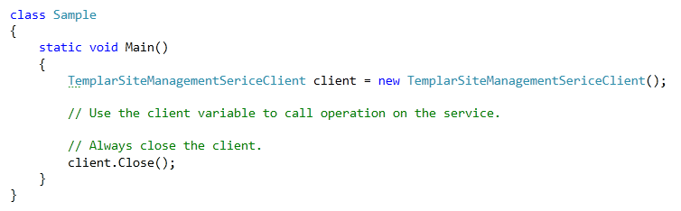
Always host it on SSL as clear-text password is sent as part of request.
Avoid using it on production environment as some methods may be time consuming.
Every request to the service must contain authentication information described below.
| Name | Type | Description |
| Username | String | Templar username for the deployment |
| Password | String | Password for the above specified username |
Every response from the service contains following information related to the status of operation performed.
| Name | Type | Description |
| IsSuccessful | Bool | Is true if operation was performed successfully, else false. |
| Message | String | Contains message corresponding to status of the operation performed. |
| ResponseCode | Int | Response code corresponding to status of the service call. |
| Code | Message | Description |
| 401 | Authentication failed | Server was not able to authenticate using username and password provided. |
| 500 | Error occurred while processing your request | Some unexpected error occurred while performing the operation on server. Check server exception logs for further details. |
Returns list containing metadata of sites at current server.
Request Object Structure: GetSiteListRQ
Only common request parameters described above are required to call this method.
Response Object Structure: GetSiteListRS
Along with common response parameters, following information is also returned as a part of response object.
| Name | Type | Description |
| Sites | List |
List containing metadata of the sites. |
Sample Request Object
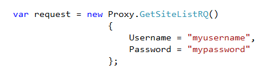
Sample Response Object
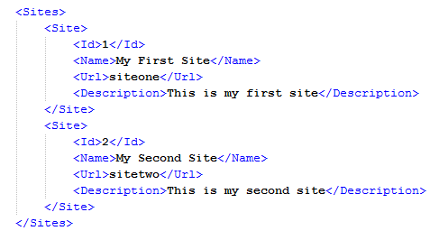
Returns list containing list of metadata of templates on current server.
Request Object Structure: GetTemplateListRQ
Only common request parameters described above are required to call this method.
Response Object Structure: GetTemplateListRS
Along with common response parameters, following information is also returned as a part of response object.
| Name | Type | Description |
| Templates | List |
List of metadata of templates. |
Sample Request Object
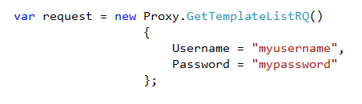
Sample Response Object
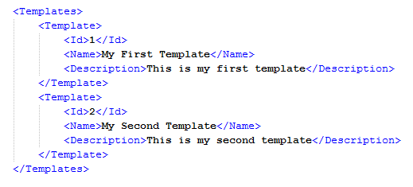
Returns site entity containing complete information for the site.
Request Object Structure: GetSiteRQ
Along with common request parameters described above, following information is also expected by the service.
| Name | Type | Description |
| SiteId | Long | Id of the site whose details are to be fetched. |
| SectionsToInclude | List |
List of site sections defined in SiteSection enumeration which needs to be included in response. |
Response Object Structure: GetSiteRS
Along with common response parameters, following information is also returned as a part of response object.
| Name | Type | Description |
| Site | Site | Contains information for the site. |
Sample Request
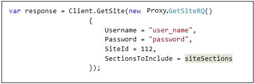
Sample Response
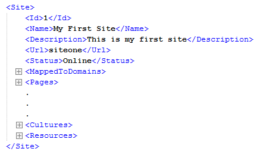
Returns site entity containing information parsed from specified template.
Request Object Structure: GetSiteFromTemplateRQ
Along with common request parameters described above, following information is also expected by the service.
| Name | Type | Description |
| TemplateId | Long | Id of the template from which details are to be fetched. |
Response Object Structure: GetSiteFromTemplateRS
Along with common response parameters, following information is also returned as a part of response object.
| Name | Type | Description |
| Site | Site | Contains information for the site. |
Sample Request
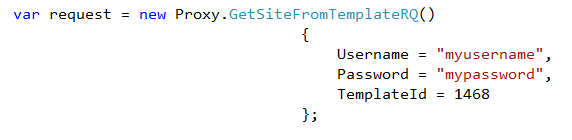
Sample Response
Updates the site specified in request object with details provided.
Request Object Structure: UpdteSiteRQ
| Name | Type | Description |
| SiteId | Long | Contains site id of the site to be updated. |
| Commands | List |
Contains a list of AddOrUpdate and/or Remove commands. Depending upon which command is passed the action is executed for specified Site. |
Response Object Structure: UpdateSiteRS
Only common response parameters containing information about the update operation are returned as part of response from server.
Sample Request
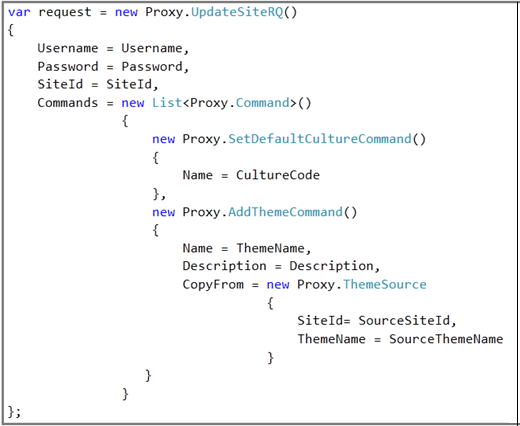
Can be used to add or update site level resource to an existing site along with content. If specified key matches an existing resource, it will be updated else added.
Request Object Structure: AddOrUpdateSiteResourceRQ
Along with common request parameters described above, following information is also expected by the service.
| Name | Type | Description |
| SiteId | Long | Id of target site. |
| Key | String | Key to be used for storing the resource. |
| Data | Byte[] | Content of the resource. |
| ContentType | String | Mime type of the resource file. |
| IsPublic | Bool | True if resource is to be accessed using url. |
| Comment | String | Comment, if any, while adding or updating resource. |
Response Object Structure: AddOrUpdateSiteResourceRS
Along with common response parameters, following information is also returned as a part of response object.
| Name | Type | Description |
| LiveModeUrl | String | Url to be used to access resource in live mode. |
| PreviewUrl | String | Url to be used to preview resource. |
Sample Request
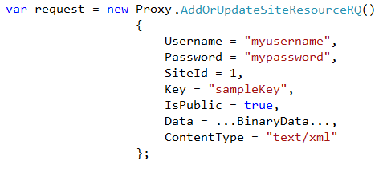
Sample Response
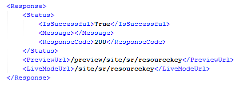
It can be used to upload zipped content to an existing site level theme.
Request Object Structure: UploadThemeRQ
Along with common request parameters described above, following information is also expected by the service.
| Name | Type | Description |
| ThemeId | Long | Id of the target theme. |
| Data | Byte[] | Zipped content of theme. |
Response Object Structure : UploadThemeRS
Only common response parameters containing information about the update operation are returned as part of response from server.
Sample Request
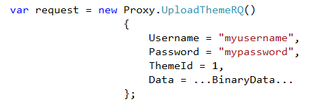
It can be used to upload globalization data in zipped format to an existing site level culture instance.
Request Object Structure: UploadGlobalizationDataRQ
Along with common request parameters described above, following information is also expected by the service.
| Name | Type | Description |
| CultureInstanceId | Long | Id of target culture instance |
| Data | Byte[] | Zipped content of culture. |
Response Object Structure: UploadGlobalizationDataRS
Only common response parameters containing information about the update operation are returned as part of response from server.
Sample Request
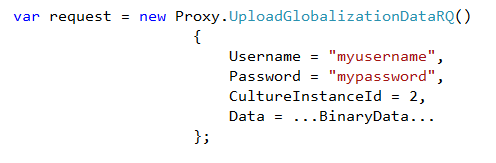
It can be used to download an existing site resource.
Request Object Structure: DownloadSiteResourceRQ
Along with common request parameters described above, following information is also expected by the service.
| Name | Type | Description |
| SiteId | Long | Id of the site from which resource is to be downloaded. |
| Key | String | Key of the site resource. |
| ResourceId | Long? | Id of the resource, if known, else null. |
Response Object Structure: DownloadSiteResourceRS
Along with common response parameters, following information is also returned as a part of response object.
| Name | Type | Description |
| Data | Byte[] | Byte array containing contents of the specified site resource. |
Sample Request
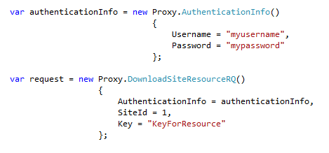
It can be used to download an existing site level theme.
Request Object Structure: UploadGlobalizationDataRQ
Along with common request parameters described above, following information is also expected by the service.
| Name | Type | Description |
| ThemeId | Long | Id of the theme to be downloaded. |
Response Object Structure: UploadGlobalizationDataRS
Along with common response parameters, following information is also returned as a part of response object.
| Name | Type | Description |
| Data | Byte[] | Byte array containing contents of the specified site level theme. |
Sample Request
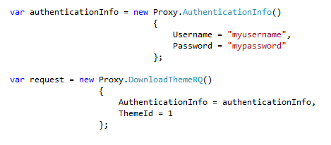
It can be used to download globalization data in zipped format from an existing site level culture instance.
Request Object Structure: DownloadGlobalizationDataRQ
| Name | Type | Description |
| CultureInstanceId | Long | Id of target culture instance |
Response Object Structure: DownloadGlobalizationDataRS
Along with common response parameters, following information is also returned as a part of response object.
| Name | Type | Description |
| Data | Byte[] | Byte array containing contents of the specified site level theme. |
Sample Request
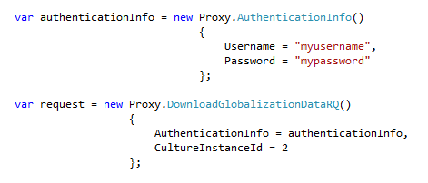
Updates the complete site specified in request object with details provided.
Request Object Structure: UpdateCompleteSiteRQ
| Name | Type | Description |
| Site | Site | Contains details of the site to be updated. |
Response Object Structure: UpdateSiteRS
Only common response parameters containing information about the update operation are returned as part of response from server.
Sample Request
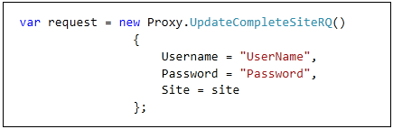
This method is used to publish the complete/partial Site. Internally it checks for the sections which are updated/to be published and publishes only those sections. Section could be Site Setting, Site Resources, Cultures, Pages, and Themes. It also performs delete operations for themes, if any one of is removed.
Request Object Structure: PublishSiteRQ
| Name | Type | Description |
| SiteId | Long | Id of the site whose details are to be fetched. |
| SectionsToPublish | List<SiteSection> | List of site sections defined in SiteSection enumeration |
| CreateBackup | Boolean | Decision to either create site backup or not (values: true/false) |
Response Object Structure: PublishSiteRS
Only common response parameters containing information about the update operation are returned as part of response from server.
Sample Request
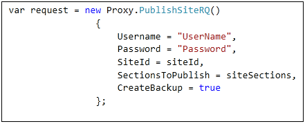
This method is used to get the complete/partial Site. Internally it checks for the sections which are updated/to be published and publishes only those sections. Section could be Site Setting, Site Resources, Cultures, Pages, and Themes. It also performs delete operations for themes, if any one of is removed.
Request Object Structure: GetCacheListRQ Only common request parameters described above are required to call this method.
Response Object Structure: GetCacheListRS Along with common response parameters, following information is also returned as a part of response object.
| Name | Type | Description |
| Data | List<GetCacheDetailRS> | List containing contents of the specified cache Details with counts of cache. |
Sample Request
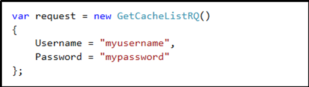
Sample Responce
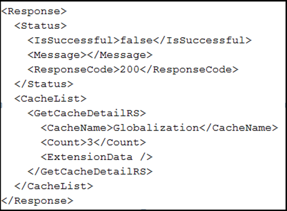
Remove the complete site cache in request object with details provided.
Request Object Structure: RemoveSiteCacheRQ Only common request parameters described above are required to call this method.
| Name | Type | Description |
| Data | long | Contains SiteId |
Response Object Structure: GetCacheListRS Only common response parameters containing information about the remove operation are returned as part of response from server.
Sample Request
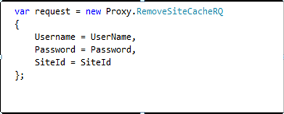
Remove the complete site cache in request object with details provided.
Request Object Structure: RemoveSiteCacheRQ Only common request parameters described above are required to call this method.
| Name | Type | Description |
| Data | long | Contains SiteId |
| Data | long | Contains PageId. |
Response Object Structure: GetCacheListRS Only common response parameters containing information about the remove operation are returned as part of response from server.
Sample Request
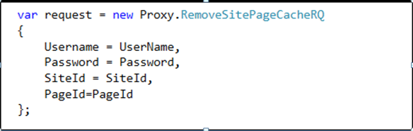
| Name | Type | Description |
| Id | Long | Id of culture instance |
| CultureCode | String | Culture code corresponding to current culture |
| CultureName | String | Full name corresponding to current culture |
| Resources | List |
List of culture resources defined in current culture |
| Contents | List |
List of culture content defined in current culture |
| Setting | CultureSetting | Culture settings for current culture |
| Name | Type | Description |
| Id | Long | Id of culture content |
| Key | String | Key for current culture content |
| ContentType | String | Content type of current culture content |
| Comment | String | Comment specified with current culture content |
| Name | Type | Description |
| Id | Long | Id of culture resource |
| Key | String | Key used for identifying current resource |
| Value | String | Value of current culture resource |
| Comment | String | Comment specified with current culture resource |
| TranslationSetting | String | Translation setting for current culture resource |
| Name | Type | Description |
| DateTimeFormat | DateTimeFormat | Contains details for date and time formatting. |
| NumberFormat | NumberFormat | Contains details for number and currency formatting. |
| TextDirection | String | Text direction for current culture i.e. Left to right OR Right to left. |
| MetricSystem | String | Metric system to be used with current culture. |
| Yes | String | Text denoting YES in current culture. |
| No | String | Text denoting NO in current culture. |
| AdditionalInfo | Dictionary |
Additional info saved with culture setting. |
| Name | Type | Description |
| ShortDateFormat | String | Formatting to be used while displaying date in short format. |
| LongDateFormat | String | Formatting to be used while displaying date in long format. |
| TimeFormat | String | Formatting to be used while displaying time. |
| DateSeparator | String | Symbol to be used as date separator. |
| TimeSeparator | String | Symbol to be used as time separator. |
| AMDesignator | String | Text to be used for denoting AM. |
| PMDesignator | String | Text to be used for denoting PM. |
| Day | List |
List of day names in current language. |
| Month | List |
List of month names in current language. |
| Name | Type | Description |
| AbbreviatedName | String | Short day name. |
| Name | String | Full day name. |
| Name | Type | Description |
| Key | String | Contains key |
| Value | String | Contains value |
| Name | Type | Description |
| TypeName | String | Contains group name |
| Collection | List |
Contains List of environment settings |
| Name | Type | Description |
| StatusCode | Int | Status code of error |
| Redirect | String | Url of page to be displayed |
| Name | Type | Description |
| SourceKey | String | Contains key of event in source widget |
| MappedKey | String | Contains mapped key from destination widget |
| DefaultValue | String | Default value of the key |
| Name | Type | Description |
| Type | Enum | Type of event i.e. Server OR client |
| SourceWidgetId | Long | Id of widget instance raising the event |
| SourceWidgetEventName | String | Name of event in source widget |
| DestinationWidgetId | Long | Id of widget instance listening to the event |
| DestinationWidgetEventName | String | Name of event in destination widget |
| EventInfoMappings | List |
List of variable mappings |
| Name | Type | Description |
| Key | String | Contains key |
| Value | String | Contains value |
| Name | Type | Description |
| Key | String | Contains key |
| Value | String | Contains value |
| Name | Type | Description |
| AbbreviatedName | String | Short month name. |
| Name | String | Full month name. |
| Name | Type | Description |
| DecimalDigits | Int | Number of digits to be displayed after decimal. |
| DigitGrouping | List |
Indicates number of digits to be grouped together. |
| DecimalSymbol | String | Symbol to be used for displaying decimal. |
| GroupSeparator | String | Symbol to be used as group separator while displaying numbers. |
| CurrencySymbol | String | Symbol to be used for displaying currency. |
| CurrencyCode | String | Code to be used with current currency. |
| PositiveSymbol | String | Symbol to be used with positive numbers. |
| NegativeSymbol | String | Symbol to be used with negative numbers. |
| PositiveCurrencyFormat | String | Formatting to be used for displaying positive currency. |
| NegativeNumberFormat | String | Formatting to be used for displaying negative numbers. |
| NegativeCurrencyFormat | String | Formatting to be used for displaying negative currency. |
| Name | Type | Description |
| Id | Long | Id of the page |
| Name | String | Name of the page |
| Title | String | Title of the page |
| RelativeUrl | String | Url of the page |
| LayoutType | Int | Layout type of the page. Details of layout code are here. |
| PageAlign | Int | Alignment of the page |
| IsDirty | Bool | Is true if changes are made in the page after last publish |
| IsLogin | Bool | Is true if the page is set as login page for site |
| IsAuthenticationRequired | Bool | Is true if page requires user to logged in |
| IsMaster | Bool | Is true for master pages |
| MasterPageId | Long | Contains id of master page in case one exists |
| State | String | State of the page |
| ConnectionType | String | Connection type specified for the page |
| DocType | Enum | HTML Doctype for current page |
| Style | XElement | Style information for current page |
| WidgetInstances | List |
List of widget instances present on the page |
| PageEnvironmentData | List |
List of page data associated with the page |
| PageScripts | List |
List of scripts to be included in current page |
| Items | ConcurrentDictionary |
Concurrent dictionary for item storage |
| MetaData | List |
List of meta data associated with the page |
| WidgetEventMappings | List |
List of event mappings associated with the widget instances present on the page |
| Code | Layout |
| 0 | 3 – Panel |
| 1 | Small Left Panel |
| 2 | Small Right Panel |
| 3 | Small Side Panels |
| 4 | Single Panel |
| Name | Type | Description |
| Id | Long | Id of the site. |
| Name | String | Name of the site. |
| Description | String | Description of the site. |
| Url | String | Url of the site. |
| CreatedDate | DateTime | Date on which site was created. |
| ModifiedDate | DateTime | Last modified date time of site. |
| Status | String | Offine OR Online. |
| Theme | Long | Id of default theme. |
| DefaultPage | Long | Id of default Page. |
| DefaultPageLayout | Int | Default layout for site pages. Details of layout codes here. |
| MappedToDomain | List |
List of domains mapped with the site. |
| IsPublished | Bool | Is true if site has been published in past. |
| State | String | State of the site. |
| Pages | List |
List of pages in the site. |
| Themes | List |
List of themes in the site. |
| GlobalThemes | List |
List of global themes included in the site. |
| CustomErrorPages | List |
List of custom error pages defined for the site. |
| DefaultCulture | String | Culture code of current default culture. |
| SiteMetaData | List |
List of site level meta data. |
| ApplyingStrategy | String | Strategy to be used for applying globalization. |
| HeaderCode | String | Header code to be emitted on every page. |
| FooterCode | String | Footer code to be emitted on every page. |
| InheritedCultures | List |
List of global cultures included in the site. |
| Cultures | List |
List of cultures defined for the site. |
| Style | XElement | Style information for the site. |
| SiteSettings | List |
List of site setting groups. |
| PageScripts | List |
List of scripts defined at site level. |
| Resources | List |
List of site resources. |
| Name | Type | Description |
| Id | Long | Id of the site |
| Name | String | Name of the site |
| Url | String | Url of the site |
| Description | String | Description of the site |
| Name | Type | Description |
| Id | Long | Id of site resource |
| SiteId | Long | Site id of current resource |
| Key | String | Key used for current resource |
| ContentType | String | Content type of current resource |
| IsPublic | Bool | True of the resource is accessible using url |
| AddedOn | DateTime | Date time when the resource was added |
| Type | Description |
| enum | SiteSection is a enumeration and below are the values of this enum - Complete CustomDomains Pages Themes ErrorCodes Metadata SEOCode Cultures EnvironmentData PageScripts Resources |
| Name | Type | Description |
| Id | Long | Id of the template |
| Name | String | Name of the template |
| Description | String | Description of the template |
| Name | Type | Description |
| Id | Long | Id of the theme |
| Name | String | Name of current theme |
| Description | String | Description of current theme |
| Path | String | Path for current theme contents |
| StateXml | XElement | Contains data stored in state |
| Name | Type | Description |
| SiteId | String | This is site id |
| ThemeName | String | Theme name to be copied |
| Name | Type | Description |
| Id | Long | Id of the widget |
| Name | String | Name of the widget |
| State | String | Default state of the widget |
| Url | String | Url of the location of widget |
| Icon | String | Url for icon file of the widget |
| Description | String | Description of the widget |
| Name | Type | Description |
| Id | Long | Id of widget instance |
| ContainerId | Long | Id of container containing the widget instance |
| BaseWidget | Widget | Object containing details of base widget |
| Title | String | Title of widget instance |
| Row | Int | Row number of widget instance |
| Column | Int | Column number of widget instance |
| State | String | State corresponding to the widget instance |
Command is a class type (abstract) which has two sub types Remove Command and Add or update Command. Remove Command is used to remove entities like Global Cultures, Site Meta Tags, Themes etc. On the same line Add or update Command is used to either Add or update entities.
| Class Name | Type of | Description |
| RemoveCommand | RemoveCustomDomainsCommand RemoveEnvironmentDataCommand RemoveErrorCodesCommand RemovePageDataCommand RemovePageMetaTagsCommand RemovePageScriptsCommand RemoveResourcesCommand RemoveScriptsCommand RemoveSiteMetaTagsCommand RemoveThemesCommand ExcludeGlobalCulturesCommand ExcludeGlobalThemesCommand RemoveSEOFooterCommand RemoveSEOHeaderCommand RemoveEnvironmentDataGroupCommand | Command to remove entities like Global Cultures, Site Meta Tags, Themes etc. |
| AddOrUpdateCommand | AddCustomDomainsCommand AddOrUpdateEnvironmentData AddOrUpdateErrorCodesCommand AddOrUpdatePageDataCommand AddOrUpdatePageMetaTagsCommand AddOrUpdatePageScriptsCommand AddOrUpdateResourceCommand AddOrUpdateScriptsCommand AddOrUpdateSiteMetaTagsCommand AddThemeCommand IncludeGlobalCulturesCommand IncludeGlobalThemesCommand SetDefaultCultureCommand SetDefaultThemeCommand UpdateSEOFooterCommand UpdateSEOHeaderCommand | Command to Add or update entities like Global Cultures, Site Meta Tags, Themes etc. |
This is used to remove/delete Custom Domains associated with the Site. List of string containing domain names can be supplied to achieve this.
| Name | Type | Description |
| Domains | List |
List of domain names to be removed from the site domain data. |
This is used to add/insert Custom Domains associated with the Site. List of string containing domain names can be supplied to achieve this.
| Name | Type | Description |
| Domains | List |
List of domain names to be added to the site domain data. |
This is used to remove/delete environment data. Group name and list of string containing keys to the data can be supplied to achieve this.
| Name | Type | Description |
| Group | string | Group name from which environment data is to be removed |
| Keys | List |
List of keys to the data to remove |
This is used to add or update environment data. Group name and list of key-value pair containing keys and values can be supplied to achieve this.
| Name | Type | Description |
| Group | string | Group name to which environment data is to be added or updated |
| Data | List |
List of key-value pair which is actual data to be added |
This is used to remove/delete error codes associated with the page’s status codes. List of string containing error codes can be supplied to achieve this.
| Name | Type | Description |
| Codes | List |
List of error codes to be removed from the site page status codes. |
This is used to add or update error codes associated with the page’s status codes. List of key and value pairs containing error codes can be supplied to achieve this.
| Name | Type | Description |
| Codes | List< KeyValuePair > | List of error codes and values as key value to be added or updated to the site page status codes. |
This is used to remove/delete page data associated with the page. Page Id and list of string containing keys to the data can be supplied to achieve this.
| Name | Type | Description |
| PageId | String | Page Id from which page data is to be removed |
| Keys | List |
List of keys to the data to be removed from the page data |
This is used to add or update page data associated with the page. Page Id and list of key and value pairs containing actual data can be supplied to achieve this.
| Name | Type | Description |
| PageId | String | Page Id to which page data is to be added or updated |
| Data | List< KeyValuePair > | List of page data and keys to the data to be added or updated to the site page status codes. |
This is used to remove/delete page data tags associated with the page. Page Id and list of string containing tags can be supplied to achieve this.
| Name | Type | Description |
| PageId | String | Page Id from which page meta tags is/are to be removed |
| Tags | List |
List of keys to the page meta tags to be removed from the page data |
This is used to add or update page metadata associated with the page. Page Id and list of key and value pairs containing actual data can be supplied to achieve this.
| Name | Type | Description |
| PageId | String | Page Id to which page metadata (tags) is/are to be added or updated |
| Tags | List< KeyValuePair > | List of page metadata and keys to the data to be added or updated to the site page metadata. |
This is used to remove/delete scripts associated with the page. Page Id and list of string containing page script names can be supplied to achieve this.
| Name | Type | Description |
| PageId | String | Page Id from which page scripts to be removed |
| Keys | List |
List of script names to be removed from the page scripts |
This is used to add or update page scripts to the page data. Page Id and list of key and value pair containing actual data can be supplied to achieve this.
| Name | Type | Description |
| PageId | String | Page Id to which page scripts data is to be added or updated |
| Scripts | List< KeyValuePair > | List of page script data and keys to the data to be added or updated to the site page |
This is used to remove/delete site resources. List of string containing site resource names can be supplied to achieve this.
| Name | Type | Description |
| Keys | List |
List of resource names to be removed from the site data |
This is used to add or update resource/theme to the site data. Page Id and list of key and value pair containing actual data can be supplied to achieve this.
| Name | Type | Description |
| Key | string | Key is used to get the resource information from the site data |
| Comment | string | To add a comment when site resource or theme is added or updated to site data |
| AllowPublicAccess | Boolean | To allow public access to resource or not |
| Data | Byte[] | Actual data to be added or updated |
| ContentType | String | Content type |
| CopyFrom | String | A key which tells copy from info. |
This is used to remove/delete scripts associated with the site. List of string containing script names can be supplied to achieve this.
| Name | Type | Description |
| Keys | List |
List of script names to be removed from the site scripts |
This is used to add or update scripts to the site page scripts. List of key and value pair containing actual data can be supplied to achieve this.
| Name | Type | Description |
| Scripts | List< KeyValuePair > | List of script data and keys to the data to be added or updated to the site page. Script key is used for comparison while add and update |
This is used to remove/delete site metadata. List of string containing tags can be supplied to achieve this.
| Name | Type | Description |
| Tags | List |
List of keys to the site metadata to be removed from the site data |
This is used to add or update site specific metadata. List of key and value pairs containing actual data can be supplied to achieve this.
| Name | Type | Description |
| Tags | List |
List of site metadata and keys to the data to be added or updated to the site metadata. |
This is used to remove/delete themes associated with site. List of string containing theme names can be supplied to achieve this.
| Name | Type | Description |
| Names | List |
List of theme names to be removed from the site data |
This is used to add theme to site. Name, Description and CopyForm location can be supplied to achieve this.
| Name | Type | Description |
| Name | String | Name of theme to add |
| Description | String | Description about theme |
| CopyFrom | ThemeSource | This is location from theme can be copied, it contains site id and theme name |
This is used to remove/delete global cultures from the site level globalization data. List of string containing names of the global culture can be supplied to achieve this.
| Name | Type | Description |
| Names | List |
List of global culture names to be removed from the globalization data |
This is used to add/insert global cultures to the site level globalization data. List of string containing names of the global culture can be supplied to achieve this.
| Name | Type | Description |
| Names | List |
List of global culture names to be added to the site level globalization data |
This is used to remove/delete Global Themes from the site level global themes. List of string containing names of the Global Themes can be supplied to achieve this.
| Name | Type | Description |
| Names | List |
List of Global Theme names to be removed from the site level global themes |
This is used to remove/delete global themes from the site level global themes. List of string containing names of the global themes can be supplied to achieve this.
| Name | Type | Description |
| Names | List |
List of global theme names to be removed from the site level global themes |
This is used to set site default culture. String containing name of culture can be supplied to achieve this.
| Name | Type | Description |
| Name | string | Name of culture to be set as site default culture |
This is used to set default theme. String containing name of theme can be supplied to achieve this.
| Name | Type | Description |
| Name | string | Theme name to be set as site default theme |
This is used to remove/delete footer code. This command can be directly executed to remove footer code.
This is used to update site footer code. String containing footer code is supplied to achieve this.
| Name | Type | Description |
| Footer | String | Footer code value |
This is used to remove/delete header code. This command can be directly executed to remove header code.
This is used to update site header code. String containing header code is supplied to achieve this.
| Name | Type | Description |
| Header | String | Header code value |
This is used to remove/delete environment data group. Group name can be supplied to achieve this.
| Name | Type | Description |
| Name | string | Group name which is to be removed |